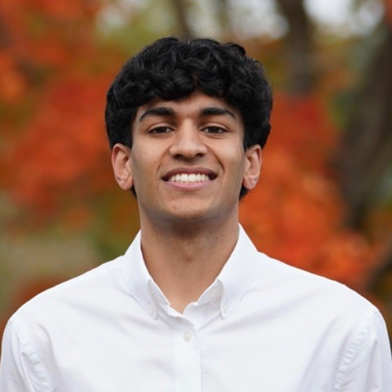

Health • Data • Policy • Technology
Emory University student and Robert W. Woodruff Scholar studying Human Health and Economics on the pre-med track. I am interested in medicine, public health, policy, and using data to understand healthcare outcomes at scale.

At Westchester Medical Center and New York Medical College, I conduct clinical and population health research focused on COVID-19-associated mortality trends, substance abuse, firearm injuries, organ transplantation, and social determinants of health.
I am drawn to problems where individual lives connect to larger systems: healthcare access, public health policy, data, economics, and community-based impact. Long term, I hope to pursue an MD-MPH and work at the intersection of healthcare innovation, public health leadership, and equitable access to care.
Email: roshandhand@gmail.com
LinkedIn: Add your LinkedIn link here
GitHub: Add your GitHub link here